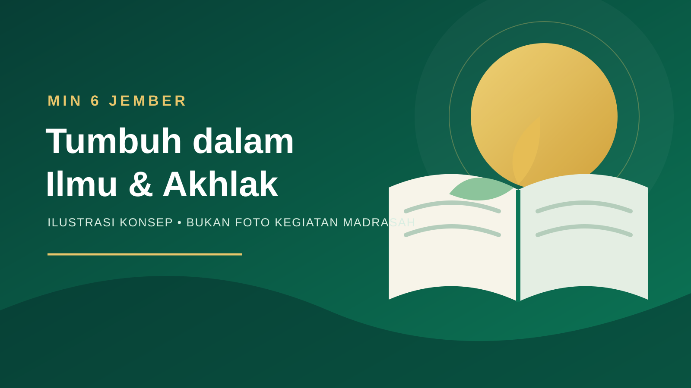

MIN 6 JEMBER · BRAND STUDY
Pratinjau konsep identitas visual
Halaman internal untuk meninjau arah desain logo dan ilustrasi. Belum menggantikan logo resmi madrasah dan belum otomatis diterapkan pada header website.
Logo horizontal
Komposisi simbol dan nama madrasah untuk header, dokumen, dan materi informasi.
Simbol mandiri
Alternatif ikon aplikasi atau favicon setelah disetujui.
Palet identitas
Hijau sebagai warna utama, emas sebagai aksen, dan putih hangat sebagai ruang visual.
Ilustrasi sampul SPMB
Visual konseptual untuk informasi SPMB; bukan foto gedung, siswa, atau dokumentasi kegiatan MIN 6 Jember.

Status: Konsep untuk ditinjau. Sebelum dipakai sebagai identitas resmi, logo perlu mendapat persetujuan madrasah. Foto hero, GTK, fasilitas, dan kegiatan tetap harus menggunakan dokumentasi asli yang diizinkan untuk dipublikasikan.